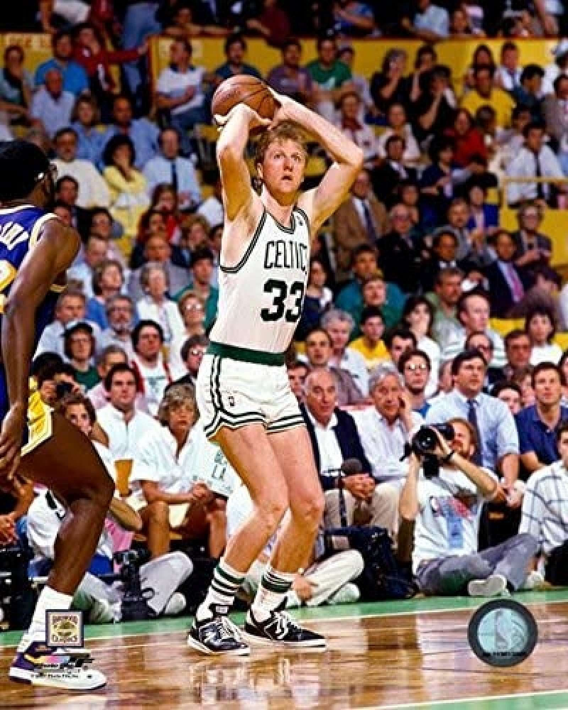
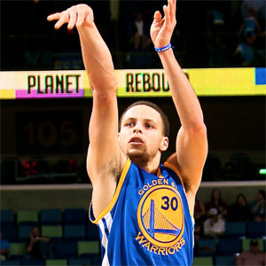
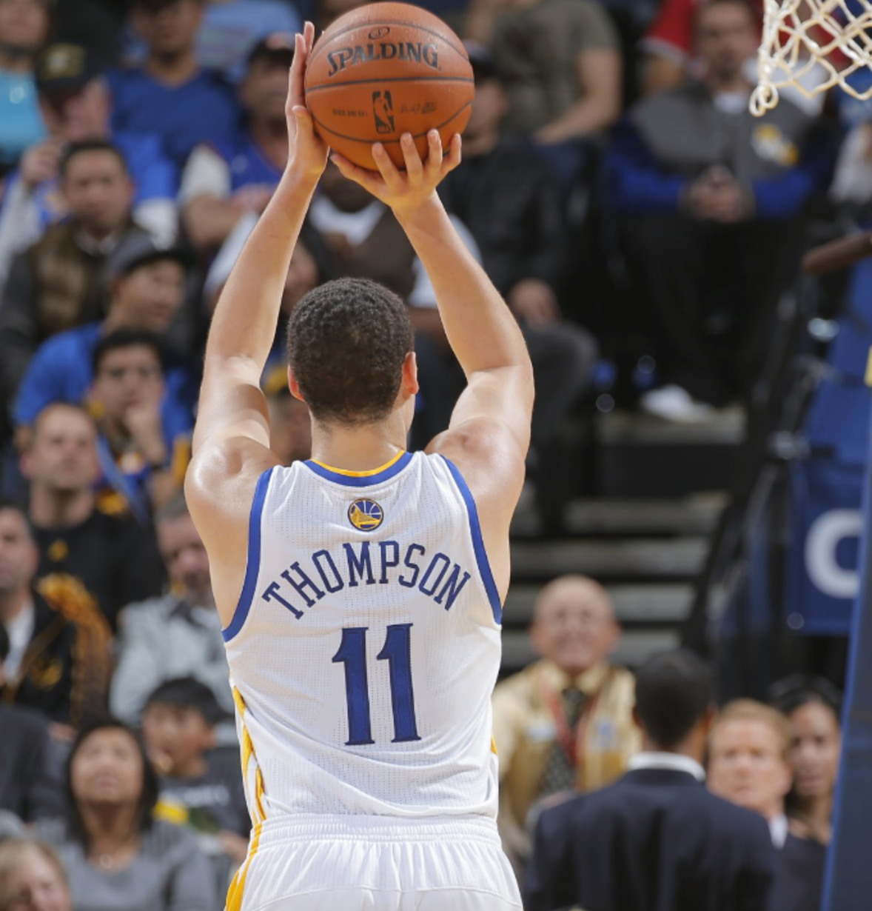
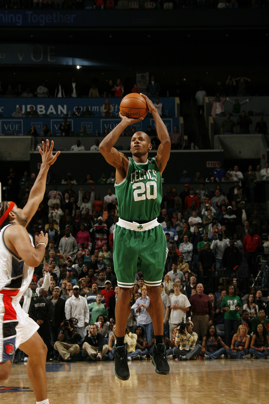
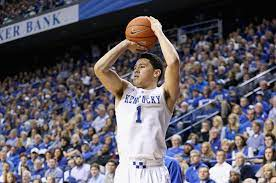

There are a variety of different ways to shoot a basketball. Over the years, we have seen a range of
fundamentally sound and unorthodox shots in the NBA (National Basketball Association).



What is Stephen Curry (on the right) good at?
- He places the ball in the center relative to his
shoulders
- He does a good job of maximizing his power by using his legs more than his arms
- He has a perfect shot
Larry Bird (top left) played in the 1980s
- His shot was rather unorthodox as he placed the ball behind his head
- Do not shoot like he does, unless not following the fundamentals works for you
Klay Thompson (bottom) is a current player
- Klay specializes in catch-and-shoot shots, where he gets passed the ball and shoots it within a second
or so
Here are some other players I enjoy watching:

Ray Allen (above) was famous for his athleticism, and his catch-and-shoot three-point shooting
My favorite player to watch is Devin Booker (below)

Devin is good at mid-range shots, which are shots closer to the basket than three-pointers